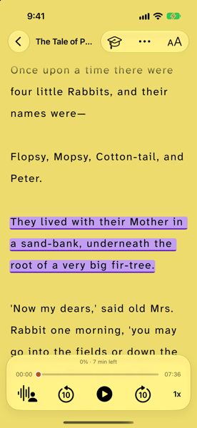
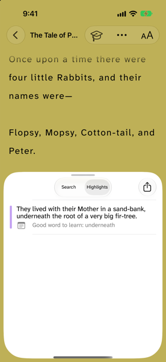

Highlighting and Note-Taking Tips for Kids with Dyslexia
A page covered in bright yellow can feel like hard work done. But for most kids, highlighting on its own does not help them remember much. The good news is that a highlight can be a great first step, if you know what to do next.
This guide is for parents of kids with dyslexia, and for older students who want to study on their own. It shows how to turn a highlight into a note, a question, and a quick review, in a way that does not add a lot of extra reading or writing.
Why highlighting alone falls short
In 2013, a team of learning researchers led by John Dunlosky looked at ten popular study techniques. Highlighting and underlining were among the five they rated as low utility, together with rereading. Practice testing and spreading study out over time got the highest ratings (Association for Psychological Science).
That does not mean you should throw the highlighters away. In a follow-up article for teachers, Dunlosky says highlighting is only the beginning of the journey: the real learning comes from what you do with the parts you marked (American Educator).
Why notes can be extra hard with dyslexia
Dyslexia affects reading and spelling, so notes can end up hard to read back later (Understood). Copying long sentences is slow and tiring, and it leaves less energy for thinking about what the words mean. That is why short notes, color, and the right tools matter so much.
Keep in mind: the goal is not neat notes. The goal is for your child to understand the idea and find it again later. Messy spelling in a note is fine if your child can read it.
Six tips that make highlights useful
- Read first, highlight second. Read a paragraph or a page (or listen to it read aloud) before marking anything. Then go back and pick what matters. This stops the whole page from turning yellow.
- Highlight less. Try one short line per paragraph, or one per page for a story. If everything is marked, nothing stands out.
- Add a note in your own words. Next to a highlight, write one short line: what it means, or why it matters. Explaining an idea, and asking yourself why it is true, are two of the techniques the researchers rated higher than highlighting (American Educator). A note can be three words. It can also be a quick drawing.
- One note, one idea. Short notes are easier to read back. Dyslexia Scotland suggests summing up notes on sticky notes with a very short sentence or a drawing (Dyslexia Scotland).
- Turn highlights into questions. Later, cover the text and ask: what did that line say? Testing yourself, then checking the answer, is one of the strongest study habits we know of. Flashcards with a word on one side and the answer on the other work well (American Educator).
- Come back in short bursts. Review the highlights and notes for a few minutes the next day, and again later in the week. Spreading study out works better than one long session (Association for Psychological Science), and short 10 to 20 minute sessions are easier to start (Dyslexia Scotland).
If your child prefers structure, a simple note layout can help too. Understood explains five methods, from the split-page (Cornell) method to visual mind maps (Understood). Try one or two and keep the one your child likes.
How parents can help
- Let your child choose what to highlight. Then ask, "Why did you pick that one?" Their answer is the note.
- Be the scribe sometimes. Your child says the note, and you type or write it. Dictation on a phone or tablet works too. The thinking is what counts.
- Make review a game. Read a highlight out with one word missing, and let your child fill the gap.
- Talk to the school. If note-taking is a big barrier in class, ask about support such as printed notes or recordings.
For more everyday ideas, see our 10 reading strategies for dyslexia and the guide to setting up an iPhone or iPad for a child with dyslexia.
Highlights and notes on a phone or tablet
Many apps let you highlight text and add comments, which keeps notes next to the words they belong to (Understood). On a screen, there is nothing to copy out by hand, and nothing gets lost in a school bag.
Our reading app, DyslexiaBuddy, now has highlights and notes built into the reader, on iPhone and iPad:
- Select a line and tap Highlight. The color adjusts to the reading theme, so it stands out on light and dark pages alike.
- Long-press a highlight to add a note in your own words.
- Open Highlights & Notes from the ••• menu to see every highlight and note in one list, and tap one to jump back to it.
- Share them when you are done, for example to send to a teacher.


It works in the free Library of classic children's books, on scanned worksheets, and on imported PDFs. Highlights and notes are free; there is no subscription needed to use them. The app also turns words you look up into flashcards, which makes tip 5 easy.
Sources
- Association for Psychological Science: Which study strategies make the grade? (2013)
- Dunlosky, J. Strengthening the Student Toolbox: Study Strategies to Boost Learning. American Educator, Fall 2013
- Understood: How assistive technology can help kids with note-taking
- Understood: 5 simple strategies for note-taking
- Dyslexia Scotland: Study skills (PDF)
Know a parent or student who could use this? Send it to them.